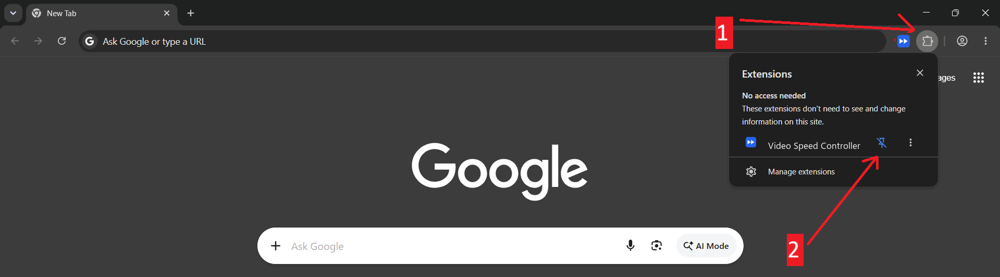
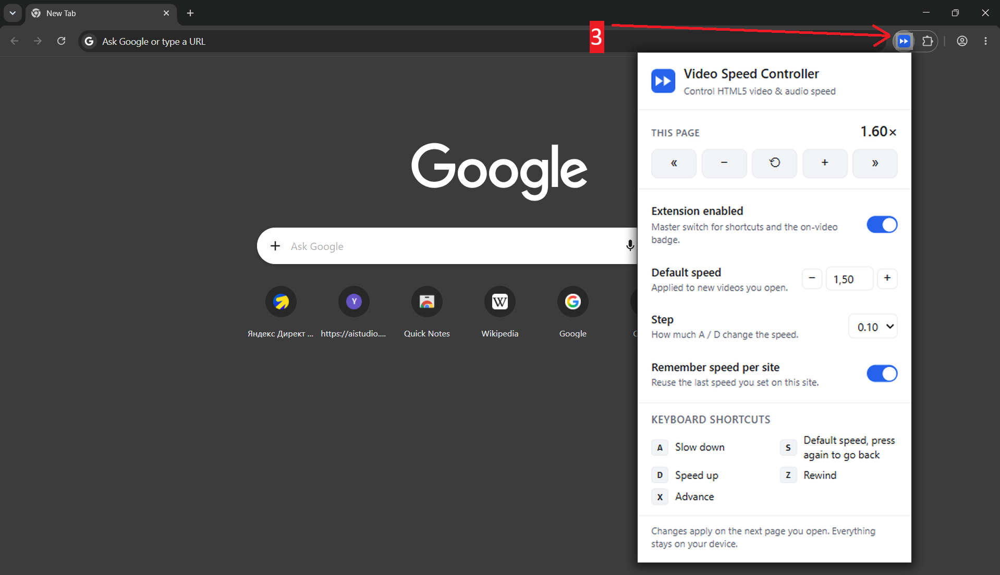

You’re all set
Video Speed Controller is installed. Pin it once, then control the speed of any video straight from your keyboard.

Pin the icon to your toolbar
- Click the puzzle icon in your browser bar.
- Click the pin next to Video Speed Controller.

Speed up any video
- Open any page with a video, then press D to speed up or A to slow down. S jumps to your default speed and back again, Z/X rewind and skip.
Click the pinned icon to set a default speed, change the step, or remember a speed per site. Everything stays on your device — no account, no sync.